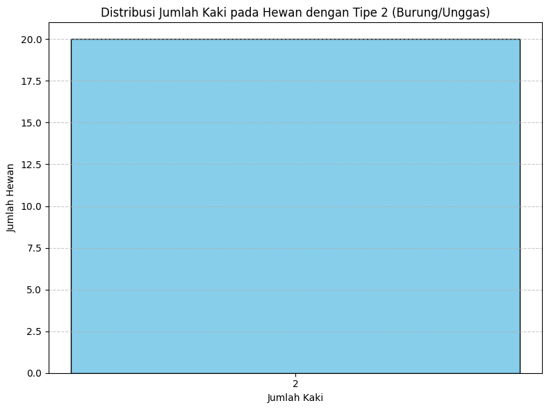
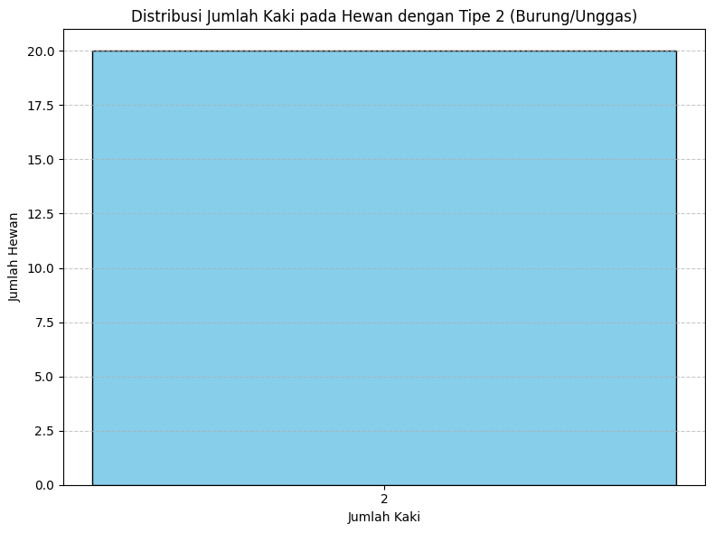
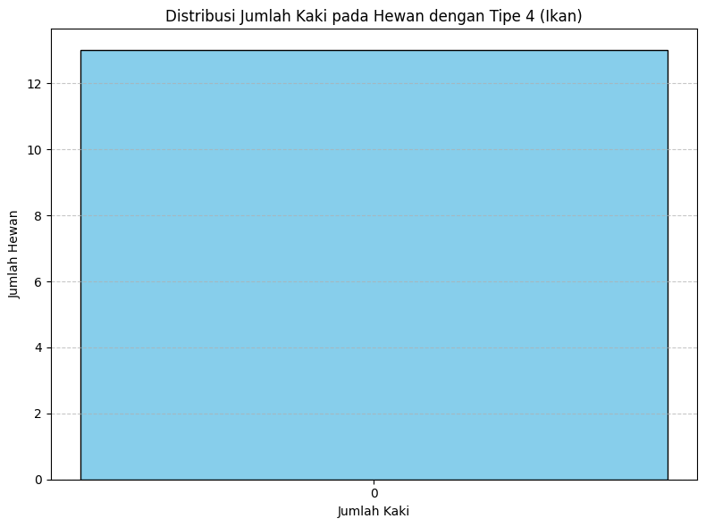
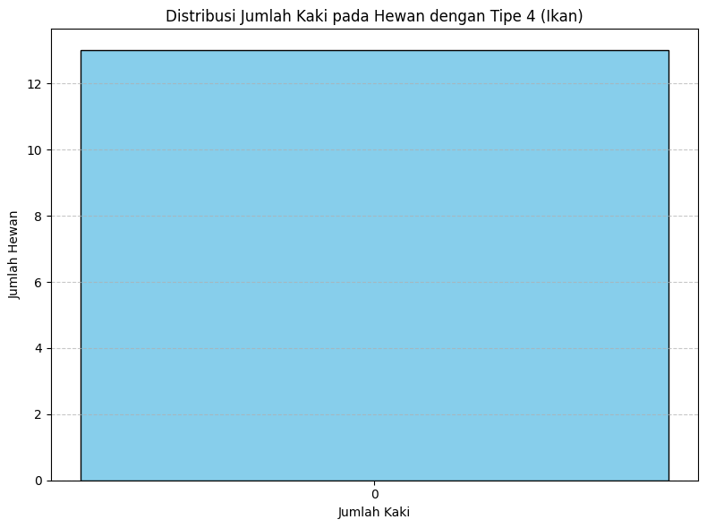
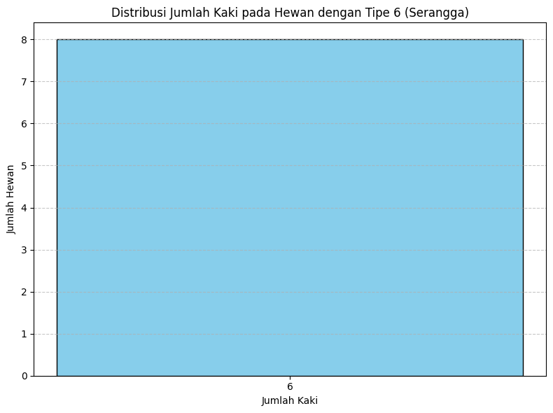
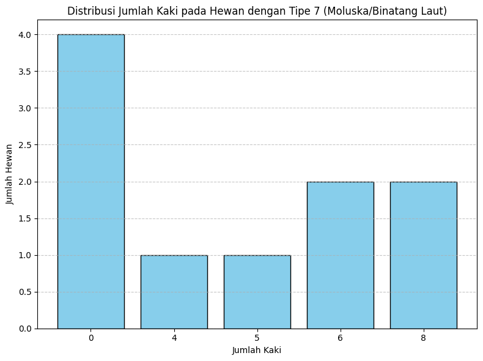
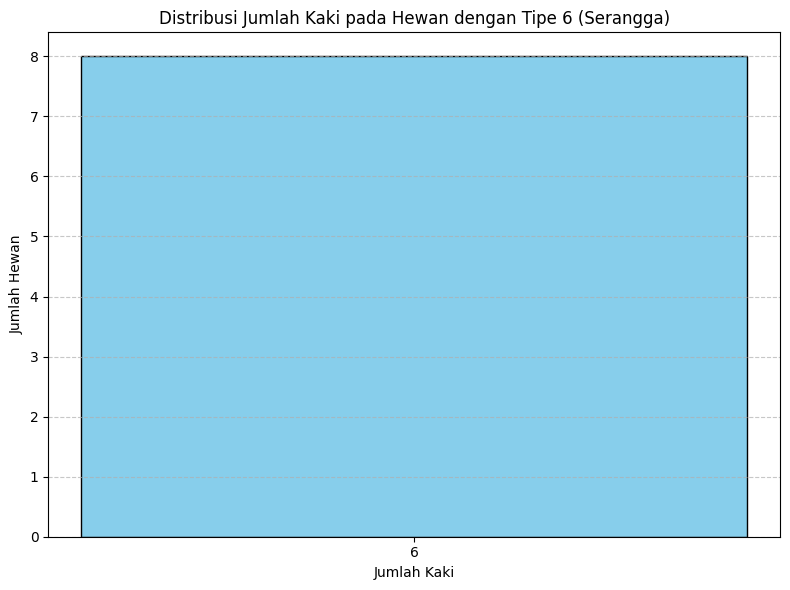
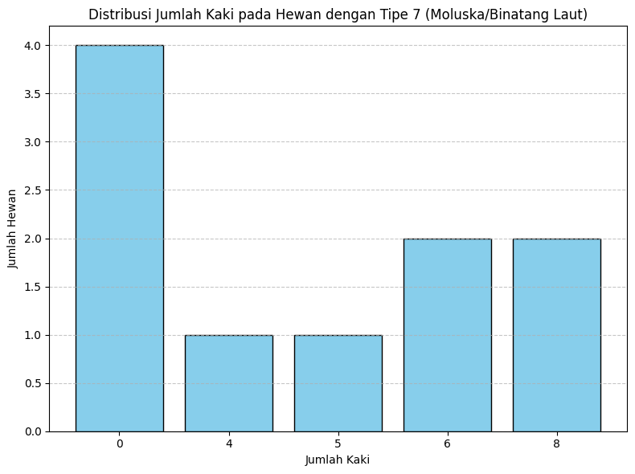

Install library uci machine learning
!pip install ucimlrepo
Collecting ucimlrepo
Downloading ucimlrepo-0.0.3-py3-none-any.whl (7.0 kB)
Installing collected packages: ucimlrepo
Successfully installed ucimlrepo-0.0.3
import matplotlib.pyplot as plt
import pandas as pd
import seaborn as sns
import numpy as np
Install dataset Zoo
Web Uci error
from ucimlrepo import fetch_ucirepo
# fetch dataset
zoo = fetch_ucirepo(id=111)
# data (as pandas dataframes)
X = zoo.data.features
y = zoo.data.targets
# metadata
print(zoo.metadata)
# variable information
print(zoo.variables)
---------------------------------------------------------------------------
SSLCertVerificationError Traceback (most recent call last)
/usr/lib/python3.10/urllib/request.py in do_open(self, http_class, req, **http_conn_args)
1347 try:
-> 1348 h.request(req.get_method(), req.selector, req.data, headers,
1349 encode_chunked=req.has_header('Transfer-encoding'))
/usr/lib/python3.10/http/client.py in request(self, method, url, body, headers, encode_chunked)
1282 """Send a complete request to the server."""
-> 1283 self._send_request(method, url, body, headers, encode_chunked)
1284
/usr/lib/python3.10/http/client.py in _send_request(self, method, url, body, headers, encode_chunked)
1328 body = _encode(body, 'body')
-> 1329 self.endheaders(body, encode_chunked=encode_chunked)
1330
/usr/lib/python3.10/http/client.py in endheaders(self, message_body, encode_chunked)
1277 raise CannotSendHeader()
-> 1278 self._send_output(message_body, encode_chunked=encode_chunked)
1279
/usr/lib/python3.10/http/client.py in _send_output(self, message_body, encode_chunked)
1037 del self._buffer[:]
-> 1038 self.send(msg)
1039
/usr/lib/python3.10/http/client.py in send(self, data)
975 if self.auto_open:
--> 976 self.connect()
977 else:
/usr/lib/python3.10/http/client.py in connect(self)
1454
-> 1455 self.sock = self._context.wrap_socket(self.sock,
1456 server_hostname=server_hostname)
/usr/lib/python3.10/ssl.py in wrap_socket(self, sock, server_side, do_handshake_on_connect, suppress_ragged_eofs, server_hostname, session)
512 # ctx._wrap_socket()
--> 513 return self.sslsocket_class._create(
514 sock=sock,
/usr/lib/python3.10/ssl.py in _create(cls, sock, server_side, do_handshake_on_connect, suppress_ragged_eofs, server_hostname, context, session)
1070 raise ValueError("do_handshake_on_connect should not be specified for non-blocking sockets")
-> 1071 self.do_handshake()
1072 except (OSError, ValueError):
/usr/lib/python3.10/ssl.py in do_handshake(self, block)
1341 self.settimeout(None)
-> 1342 self._sslobj.do_handshake()
1343 finally:
SSLCertVerificationError: [SSL: CERTIFICATE_VERIFY_FAILED] certificate verify failed: certificate has expired (_ssl.c:1007)
During handling of the above exception, another exception occurred:
URLError Traceback (most recent call last)
/usr/local/lib/python3.10/dist-packages/ucimlrepo/fetch.py in fetch_ucirepo(name, id)
65 try:
---> 66 response = urllib.request.urlopen(api_url)
67 data = json.load(response)
/usr/lib/python3.10/urllib/request.py in urlopen(url, data, timeout, cafile, capath, cadefault, context)
215 opener = _opener
--> 216 return opener.open(url, data, timeout)
217
/usr/lib/python3.10/urllib/request.py in open(self, fullurl, data, timeout)
518 sys.audit('urllib.Request', req.full_url, req.data, req.headers, req.get_method())
--> 519 response = self._open(req, data)
520
/usr/lib/python3.10/urllib/request.py in _open(self, req, data)
535 protocol = req.type
--> 536 result = self._call_chain(self.handle_open, protocol, protocol +
537 '_open', req)
/usr/lib/python3.10/urllib/request.py in _call_chain(self, chain, kind, meth_name, *args)
495 func = getattr(handler, meth_name)
--> 496 result = func(*args)
497 if result is not None:
/usr/lib/python3.10/urllib/request.py in https_open(self, req)
1390 def https_open(self, req):
-> 1391 return self.do_open(http.client.HTTPSConnection, req,
1392 context=self._context, check_hostname=self._check_hostname)
/usr/lib/python3.10/urllib/request.py in do_open(self, http_class, req, **http_conn_args)
1350 except OSError as err: # timeout error
-> 1351 raise URLError(err)
1352 r = h.getresponse()
URLError: <urlopen error [SSL: CERTIFICATE_VERIFY_FAILED] certificate verify failed: certificate has expired (_ssl.c:1007)>
During handling of the above exception, another exception occurred:
ConnectionError Traceback (most recent call last)
<ipython-input-3-359071105ecb> in <cell line: 4>()
2
3 # fetch dataset
----> 4 zoo = fetch_ucirepo(id=111)
5
6 # data (as pandas dataframes)
/usr/local/lib/python3.10/dist-packages/ucimlrepo/fetch.py in fetch_ucirepo(name, id)
67 data = json.load(response)
68 except (urllib.error.URLError, urllib.error.HTTPError):
---> 69 raise ConnectionError('Error connecting to server')
70
71 # verify that dataset exists
ConnectionError: Error connecting to server
# URL dataset Abalone di UCI Repository
url = "https://archive.ics.uci.edu/ml/machine-learning-databases/zoo/zoo.data"
# Mengimpor data ke dalam pandas DataFrame
df = pd.read_csv(url, header=None, names=["animal_name", "hair", "feathers", "eggs", "milk", "airborne", "aquatic", "predator", "toothed","backbone","breathes","venomous","fins","legs","tail","domestic","catsize","type"])
# Menampilkan DataFrame
df
install manual
import pandas as pd
# Path ke file-file dataset
index_path = '/content/drive/MyDrive/PSD/Zoo/dataset/Index'
data_path = '/content/drive/MyDrive/PSD/Zoo/dataset/zoo.data'
names_path = '/content/drive/MyDrive/PSD/Zoo/dataset/zoo.names'
# Membaca file data dan memberi nama kolom sesuai dengan dataset
df = pd.read_csv(data_path, header=None, names=["animal_name", "hair", "feathers", "eggs", "milk", "airborne", "aquatic", "predator", "toothed", "backbone", "breathes", "venomous", "fins", "legs", "tail", "domestic", "catsize", "type"])
# Menampilkan nama-nama kolom
print(df.columns)
# Memastikan nama kolom target yang benar
target_column_name = "type"
# Memisahkan fitur (X) dan target (y)
X = df.drop(columns=["animal_name", target_column_name])
y = df[target_column_name]
# Menampilkan DataFrame
print(X)
print(y)
Index(['animal_name', 'hair', 'feathers', 'eggs', 'milk', 'airborne',
'aquatic', 'predator', 'toothed', 'backbone', 'breathes', 'venomous',
'fins', 'legs', 'tail', 'domestic', 'catsize', 'type'],
dtype='object')
hair feathers eggs milk airborne aquatic predator toothed \
0 1 0 0 1 0 0 1 1
1 1 0 0 1 0 0 0 1
2 0 0 1 0 0 1 1 1
3 1 0 0 1 0 0 1 1
4 1 0 0 1 0 0 1 1
.. ... ... ... ... ... ... ... ...
96 1 0 0 1 0 0 0 1
97 1 0 1 0 1 0 0 0
98 1 0 0 1 0 0 1 1
99 0 0 1 0 0 0 0 0
100 0 1 1 0 1 0 0 0
backbone breathes venomous fins legs tail domestic catsize
0 1 1 0 0 4 0 0 1
1 1 1 0 0 4 1 0 1
2 1 0 0 1 0 1 0 0
3 1 1 0 0 4 0 0 1
4 1 1 0 0 4 1 0 1
.. ... ... ... ... ... ... ... ...
96 1 1 0 0 2 1 0 1
97 0 1 1 0 6 0 0 0
98 1 1 0 0 4 1 0 1
99 0 1 0 0 0 0 0 0
100 1 1 0 0 2 1 0 0
[101 rows x 16 columns]
0 1
1 1
2 4
3 1
4 1
..
96 1
97 6
98 1
99 7
100 2
Name: type, Length: 101, dtype: int64
df
| animal_name | hair | feathers | eggs | milk | airborne | aquatic | predator | toothed | backbone | breathes | venomous | fins | legs | tail | domestic | catsize | type | |
|---|---|---|---|---|---|---|---|---|---|---|---|---|---|---|---|---|---|---|
| 0 | aardvark | 1 | 0 | 0 | 1 | 0 | 0 | 1 | 1 | 1 | 1 | 0 | 0 | 4 | 0 | 0 | 1 | 1 |
| 1 | antelope | 1 | 0 | 0 | 1 | 0 | 0 | 0 | 1 | 1 | 1 | 0 | 0 | 4 | 1 | 0 | 1 | 1 |
| 2 | bass | 0 | 0 | 1 | 0 | 0 | 1 | 1 | 1 | 1 | 0 | 0 | 1 | 0 | 1 | 0 | 0 | 4 |
| 3 | bear | 1 | 0 | 0 | 1 | 0 | 0 | 1 | 1 | 1 | 1 | 0 | 0 | 4 | 0 | 0 | 1 | 1 |
| 4 | boar | 1 | 0 | 0 | 1 | 0 | 0 | 1 | 1 | 1 | 1 | 0 | 0 | 4 | 1 | 0 | 1 | 1 |
| ... | ... | ... | ... | ... | ... | ... | ... | ... | ... | ... | ... | ... | ... | ... | ... | ... | ... | ... |
| 96 | wallaby | 1 | 0 | 0 | 1 | 0 | 0 | 0 | 1 | 1 | 1 | 0 | 0 | 2 | 1 | 0 | 1 | 1 |
| 97 | wasp | 1 | 0 | 1 | 0 | 1 | 0 | 0 | 0 | 0 | 1 | 1 | 0 | 6 | 0 | 0 | 0 | 6 |
| 98 | wolf | 1 | 0 | 0 | 1 | 0 | 0 | 1 | 1 | 1 | 1 | 0 | 0 | 4 | 1 | 0 | 1 | 1 |
| 99 | worm | 0 | 0 | 1 | 0 | 0 | 0 | 0 | 0 | 0 | 1 | 0 | 0 | 0 | 0 | 0 | 0 | 7 |
| 100 | wren | 0 | 1 | 1 | 0 | 1 | 0 | 0 | 0 | 1 | 1 | 0 | 0 | 2 | 1 | 0 | 0 | 2 |
101 rows × 18 columns
Kelompok hewan berdasarkan Tipe/type
# Kelompokkan data berdasarkan kolom 'type'
grouped_data = df.groupby('type')
# Dictionary untuk mapping tipe ke kategori
type_categories = {
1: 'Mamalia',
2: 'Burung/Unggas',
3: 'Reptil',
4: 'Ikan',
5: 'Amfibi',
6: 'Serangga',
7: 'Moluska/Binatang laut'
}
# Iterasi melalui setiap tipe dan mencetak jumlah baris dan nama binatang untuk setiap tipe
for group, data in grouped_data:
animal_names = data['animal_name'].unique() # Ambil nama binatang unik untuk tipe ini
category = type_categories[group] # Ambil kategori tipe dari dictionary
print(f"Kelas {group} ({category}) - Jumlah: {data.shape},\nNama binatang: {animal_names}\n")
Kelas 1 (Mamalia) - Jumlah: (41, 18),
Nama binatang: ['aardvark' 'antelope' 'bear' 'boar' 'buffalo' 'calf' 'cavy' 'cheetah'
'deer' 'dolphin' 'elephant' 'fruitbat' 'giraffe' 'girl' 'goat' 'gorilla'
'hamster' 'hare' 'leopard' 'lion' 'lynx' 'mink' 'mole' 'mongoose'
'opossum' 'oryx' 'platypus' 'polecat' 'pony' 'porpoise' 'puma' 'pussycat'
'raccoon' 'reindeer' 'seal' 'sealion' 'squirrel' 'vampire' 'vole'
'wallaby' 'wolf']
Kelas 2 (Burung/Unggas) - Jumlah: (20, 18),
Nama binatang: ['chicken' 'crow' 'dove' 'duck' 'flamingo' 'gull' 'hawk' 'kiwi' 'lark'
'ostrich' 'parakeet' 'penguin' 'pheasant' 'rhea' 'skimmer' 'skua'
'sparrow' 'swan' 'vulture' 'wren']
Kelas 3 (Reptil) - Jumlah: (5, 18),
Nama binatang: ['pitviper' 'seasnake' 'slowworm' 'tortoise' 'tuatara']
Kelas 4 (Ikan) - Jumlah: (13, 18),
Nama binatang: ['bass' 'carp' 'catfish' 'chub' 'dogfish' 'haddock' 'herring' 'pike'
'piranha' 'seahorse' 'sole' 'stingray' 'tuna']
Kelas 5 (Amfibi) - Jumlah: (4, 18),
Nama binatang: ['frog' 'newt' 'toad']
Kelas 6 (Serangga) - Jumlah: (8, 18),
Nama binatang: ['flea' 'gnat' 'honeybee' 'housefly' 'ladybird' 'moth' 'termite' 'wasp']
Kelas 7 (Moluska/Binatang laut) - Jumlah: (10, 18),
Nama binatang: ['clam' 'crab' 'crayfish' 'lobster' 'octopus' 'scorpion' 'seawasp' 'slug'
'starfish' 'worm']
Melihat fitur yang ada pada hewan
Hair = Rambut (Boolean)
# 0 = Tidak
# 1 = Ya
Feathers = Bulu (Boolean)
# 0 = Tidak
# 1 = Ya
Eggs = Bertelur (Boolean)
# 0 = Tidak
# 1 = Ya
Milk = Menyusui (Boolean)
# 0 = Tidak
# 1 = Ya
Airbone = Mengudara (Boolean)
# 0 = Tidak
# 1 = Ya
Aquatic = Akuatik (Boolean)
# 0 = Tidak
# 1 = Ya
Predator = Predator (Boolean)
# 0 = Tidak
# 1 = Ya
Toothed = Bergigi (Boolean)
# 0 = Tidak
# 1 = Ya
Backbone = Tulang belakang (Boolean)
# 0 = Tidak
# 1 = Ya
Breathes = Bernafas (Boolean)
# 0 = Tidak
# 1 = Ya
Venomous = Beracun (Boolean)
# 0 = Tidak
# 1 = Ya
Fins = Sirip (Boolean)
# 0 = Tidak
# 1 = Ya
Legs = Kaki (Numerical)
# 0 , 1 , 2 , 3, 4 , 5 , 6 , 7 , 8 dst
Tail = Berekor (Boolean)
# 0 = Tidak
# 1 = Ya
Domestic = Jinak (Boolean)
# 0 = Tidak
# 1 = Ya
Catsize = Ukuran kucing (Boolean)
# 0 = Tidak
# 1 = Ya
# Menghitung jumlah hewan dalam tipe tersebut yang memiliki nilai setiap fitur
fitur_counts = df.drop(columns=['type', 'animal_name']).apply(lambda x: x.value_counts()).T
# Membuat diagram batang dengan tipe yang mirip dengan histogram
plt.figure(figsize=(12, 6))
bar_width = 0.35
bar_colors = ['skyblue'] * len(fitur_counts.index) # Menggunakan warna sky blue untuk semua batang
bar_positions = np.arange(len(fitur_counts.index))
# Menggunakan indeks fitur_counts sebagai label sumbu x
plt.bar(bar_positions, fitur_counts[1], bar_width, color=bar_colors, label='Nilai 1')
plt.bar(bar_positions, fitur_counts[0], bar_width, color='lightgray', label='Nilai 0', bottom=fitur_counts[1])
# Menggunakan indeks fitur_counts sebagai label sumbu x
plt.xlabel('Fitur Hewan')
plt.ylabel('Jumlah Hewan')
plt.title(f'Distribusi Fitur pada Hewan')
plt.xticks(bar_positions, fitur_counts.index, rotation=45)
plt.legend()
plt.tight_layout()
plt.show()

# Menghitung jumlah hewan dengan nilai legs tertentu
legs_counts = df['legs'].value_counts().sort_index()
# Membuat diagram garis untuk distribusi jumlah hewan berdasarkan jumlah kaki (legs)
plt.figure(figsize=(8, 6))
plt.plot(legs_counts.index, legs_counts.values, marker='o', color='skyblue', linestyle='-', linewidth=2, markersize=8)
plt.xlabel('Jumlah Kaki')
plt.ylabel('Jumlah Hewan')
plt.title('Distribusi Jumlah Kaki pada Hewan')
plt.xticks(legs_counts.index)
plt.grid(axis='y', linestyle='--', alpha=0.7)
# Menambahkan label jumlah hewan pada setiap titik pada diagram
for i, count in enumerate(legs_counts.values):
plt.text(legs_counts.index[i], count, str(count), ha='center', va='bottom')
plt.tight_layout()
plt.show()

Melihat fitur yang ada pada setiap tipe hewan tanpa label legs(Numerik)
# Menghitung jumlah tipe yang ada (1 sampai 7)
types = np.arange(1, 8)
# Dictionary untuk mapping tipe ke nama
tipe_to_nama = {
1: "Mamalia",
2: "Burung/Unggas",
3: "Reptil",
4: "Ikan",
5: "Amfibi",
6: "Serangga",
7: "Moluska/Binatang Laut"
}
# Melakukan perulangan untuk setiap tipe
for tipe in types:
# Memfilter hanya baris dengan tipe tertentu
filtered_data = df[df['type'] == tipe]
# Menghitung jumlah hewan dalam tipe tersebut yang memiliki nilai setiap fitur
fitur_counts = filtered_data.drop(columns=['type', 'animal_name','legs']).apply(lambda x: x.value_counts()).T
# Membuat diagram batang dengan tipe yang mirip dengan histogram
plt.figure(figsize=(12, 6))
bar_width = 0.35
bar_colors = ['skyblue'] * len(fitur_counts.index) # Menggunakan warna sky blue untuk semua batang
bar_positions = np.arange(len(fitur_counts.index))
plt.bar(bar_positions, fitur_counts[1], bar_width, color=bar_colors, label='Nilai 1')
plt.bar(bar_positions, fitur_counts[0], bar_width, color='lightgray', label='Nilai 0', bottom=fitur_counts[1])
plt.xlabel('Nama Fitur')
plt.ylabel('Jumlah Hewan')
plt.title(f'Distribusi Fitur pada Hewan dengan Tipe {tipe} ({tipe_to_nama[tipe]})') # Menambahkan nama tipe
plt.xticks(bar_positions, fitur_counts.index, rotation=45)
plt.legend()
plt.tight_layout()
plt.show()

# Menghitung jumlah tipe yang ada (1 sampai 7)
types = np.arange(1, 8)
# Dictionary untuk mapping tipe ke nama
tipe_to_nama = {
1: "Mamalia",
2: "Burung/Unggas",
3: "Reptil",
4: "Ikan",
5: "Amfibi",
6: "Serangga",
7: "Moluska/Binatang Laut"
}
# Melakukan perulangan untuk setiap tipe
for tipe in types:
# Memfilter hanya baris dengan tipe tertentu
filtered_data = df[df['type'] == tipe]
# Menghitung jumlah hewan dalam tipe tersebut yang memiliki nilai 2, 4, 6, atau 8 kaki
legs_counts = filtered_data['legs'].value_counts().sort_index()
# Membuat diagram batang untuk fitur 'legs' pada tipe tersebut
plt.figure(figsize=(8, 6))
bar_positions = np.arange(len(legs_counts.index))
bar_colors = ['skyblue'] * len(legs_counts.index) # Menggunakan warna sky blue untuk semua batang
plt.bar(bar_positions, legs_counts, color=bar_colors, edgecolor='black')
plt.xlabel('Jumlah Kaki')
plt.ylabel('Jumlah Hewan')
plt.title(f'Distribusi Jumlah Kaki pada Hewan dengan Tipe {tipe} ({tipe_to_nama[tipe]})') # Menambahkan nama tipe
plt.xticks(bar_positions, legs_counts.index)
plt.grid(axis='y', linestyle='--', alpha=0.7)
plt.tight_layout()
plt.show()
 

 

 



# Menghitung jumlah tipe yang ada (1 sampai 7)
types = np.arange(1, 8)
# Dictionary untuk mapping tipe ke nama
tipe_to_nama = {
1: "Mamalia",
2: "Burung/Unggas",
3: "Reptil",
4: "Ikan",
5: "Amfibi",
6: "Serangga",
7: "Moluska/Binatang Laut"
}
# Melakukan perulangan untuk setiap tipe
for tipe in types:
# Memfilter hanya baris dengan tipe tertentu
filtered_data = df[df['type'] == tipe]
# Mengelompokkan data berdasarkan jumlah kaki (legs) pada tipe tersebut
legs_groups = filtered_data.groupby('legs')['animal_name'].apply(list)
# Menampilkan nama-nama binatang berdasarkan jumlah kaki
print(f"Tipe {tipe} ({tipe_to_nama[tipe]})")
for legs, animals in legs_groups.items():
print(f"Jumlah Kaki: {legs}")
print(f"Binatang: {', '.join(animals)}")
print("="*30)
print("\n")
Tipe 1 (Mamalia)
Jumlah Kaki: 0
Binatang: dolphin, porpoise, seal
==============================
Jumlah Kaki: 2
Binatang: fruitbat, girl, gorilla, sealion, squirrel, vampire, wallaby
==============================
Jumlah Kaki: 4
Binatang: aardvark, antelope, bear, boar, buffalo, calf, cavy, cheetah, deer, elephant, giraffe, goat, hamster, hare, leopard, lion, lynx, mink, mole, mongoose, opossum, oryx, platypus, polecat, pony, puma, pussycat, raccoon, reindeer, vole, wolf
==============================
Tipe 2 (Burung/Unggas)
Jumlah Kaki: 2
Binatang: chicken, crow, dove, duck, flamingo, gull, hawk, kiwi, lark, ostrich, parakeet, penguin, pheasant, rhea, skimmer, skua, sparrow, swan, vulture, wren
==============================
Tipe 3 (Reptil)
Jumlah Kaki: 0
Binatang: pitviper, seasnake, slowworm
==============================
Jumlah Kaki: 4
Binatang: tortoise, tuatara
==============================
Tipe 4 (Ikan)
Jumlah Kaki: 0
Binatang: bass, carp, catfish, chub, dogfish, haddock, herring, pike, piranha, seahorse, sole, stingray, tuna
==============================
Tipe 5 (Amfibi)
Jumlah Kaki: 4
Binatang: frog, frog, newt, toad
==============================
Tipe 6 (Serangga)
Jumlah Kaki: 6
Binatang: flea, gnat, honeybee, housefly, ladybird, moth, termite, wasp
==============================
Tipe 7 (Moluska/Binatang Laut)
Jumlah Kaki: 0
Binatang: clam, seawasp, slug, worm
==============================
Jumlah Kaki: 4
Binatang: crab
==============================
Jumlah Kaki: 5
Binatang: starfish
==============================
Jumlah Kaki: 6
Binatang: crayfish, lobster
==============================
Jumlah Kaki: 8
Binatang: octopus, scorpion
==============================
Smote metode untuk duplikasi
Cek apakah ada missing value
print(X.isnull().sum()) # Menampilkan jumlah missing value untuk setiap kolom
hair 0
feathers 0
eggs 0
milk 0
airborne 0
aquatic 0
predator 0
toothed 0
backbone 0
breathes 0
venomous 0
fins 0
legs 0
tail 0
domestic 0
catsize 0
dtype: int64
Split data
from sklearn.model_selection import train_test_split
from imblearn.over_sampling import SMOTE
# Pembagian data menjadi data latih dan data uji (80% data latih, 20% data uji)
X_train, X_test, y_train, y_test = train_test_split(X, y, test_size=0.2, random_state=42)
Data setelah di split tapi belum di Smote
X_train.shape
(80, 16)
y_train
89 5
26 5
42 6
70 1
15 7
..
60 4
71 2
14 7
92 4
51 6
Name: type, Length: 80, dtype: int64
y_train.shape
(80,)
Proses Smote
# smote data untuk memberi data sintetis
smote = SMOTE(random_state=42,k_neighbors=3)
X_train_resampled, y_train_resampled = smote.fit_resample(X_train, y_train)
X_train_resampled.shape
(203, 16)
y_train_resampled.shape
(203,)
Visualisasi
import matplotlib.pyplot as plt
# Menghitung jumlah tipe yang ada pada y_train sebelum dan setelah SMOTE
unique_classes_original = y_train.value_counts().sort_index()
unique_classes_resampled = y_train_resampled.value_counts().sort_index()
# Mengatur posisi bar pada diagram histogram
bar_positions_original = range(len(unique_classes_original))
bar_positions_resampled = [pos + 0.4 for pos in bar_positions_original]
# Membuat diagram histogram
plt.figure(figsize=(8, 6))
plt.bar(bar_positions_original, unique_classes_original, width=0.4, label='Sebelum SMOTE', color='skyblue')
plt.bar(bar_positions_resampled, unique_classes_resampled, width=0.4, label='Setelah SMOTE', color='orange')
# Menyertakan label pada sumbu x dan y serta judul diagram
plt.xlabel('Tipe')
plt.ylabel('Jumlah Hewan')
plt.title('Distribusi Kelas Hewan Sebelum dan Setelah SMOTE')
plt.xticks([pos + 0.2 for pos in bar_positions_original], unique_classes_original.index)
plt.legend()
plt.tight_layout()
plt.show()

KNN
# from sklearn.neighbors import KNeighborsClassifier
# from sklearn.metrics import accuracy_score
# # Menggunakan KNN K=3
# knn = KNeighborsClassifier(n_neighbors=3)
# knn.fit(X_train, y_train.values.ravel())
# # Prediksi pada data
# knn_predict = knn.predict(X_test)
# # knn_predict
# # Akurasi pada data
# knn_accuracy = accuracy_score(y_test,knn_predict)
Random Forest
from sklearn.ensemble import RandomForestClassifier
from sklearn.metrics import accuracy_score, classification_report
# Membangun model Random Forest Classifier
rf_clf = RandomForestClassifier(random_state=42)
rf_clf.fit(X_train_resampled, y_train_resampled.values.ravel())
# Melakukan prediksi pada data uji
rf_predictions = rf_clf.predict(X_test)
# Menghitung akurasi dan menampilkan laporan klasifikasi
rf_accuracy = accuracy_score(y_test, rf_predictions)
rf_report = classification_report(y_test, rf_predictions)
/usr/local/lib/python3.10/dist-packages/sklearn/metrics/_classification.py:1344: UndefinedMetricWarning: Precision and F-score are ill-defined and being set to 0.0 in labels with no predicted samples. Use `zero_division` parameter to control this behavior.
_warn_prf(average, modifier, msg_start, len(result))
/usr/local/lib/python3.10/dist-packages/sklearn/metrics/_classification.py:1344: UndefinedMetricWarning: Precision and F-score are ill-defined and being set to 0.0 in labels with no predicted samples. Use `zero_division` parameter to control this behavior.
_warn_prf(average, modifier, msg_start, len(result))
/usr/local/lib/python3.10/dist-packages/sklearn/metrics/_classification.py:1344: UndefinedMetricWarning: Precision and F-score are ill-defined and being set to 0.0 in labels with no predicted samples. Use `zero_division` parameter to control this behavior.
_warn_prf(average, modifier, msg_start, len(result))
Support Vector Machine
from sklearn.svm import SVC
from sklearn.metrics import accuracy_score, classification_report
# Membangun model SVM untuk klasifikasi
svm_clf = SVC(random_state=44)
svm_clf.fit(X_train_resampled, y_train_resampled.values.ravel())
# Melakukan prediksi pada data uji
svm_predictions = svm_clf.predict(X_test)
# Menghitung akurasi dan menampilkan laporan klasifikasi
svm_accuracy = accuracy_score(y_test, svm_predictions)
svm_report = classification_report(y_test, svm_predictions)
/usr/local/lib/python3.10/dist-packages/sklearn/metrics/_classification.py:1344: UndefinedMetricWarning: Precision and F-score are ill-defined and being set to 0.0 in labels with no predicted samples. Use `zero_division` parameter to control this behavior.
_warn_prf(average, modifier, msg_start, len(result))
/usr/local/lib/python3.10/dist-packages/sklearn/metrics/_classification.py:1344: UndefinedMetricWarning: Precision and F-score are ill-defined and being set to 0.0 in labels with no predicted samples. Use `zero_division` parameter to control this behavior.
_warn_prf(average, modifier, msg_start, len(result))
/usr/local/lib/python3.10/dist-packages/sklearn/metrics/_classification.py:1344: UndefinedMetricWarning: Precision and F-score are ill-defined and being set to 0.0 in labels with no predicted samples. Use `zero_division` parameter to control this behavior.
_warn_prf(average, modifier, msg_start, len(result))
Decision Tree
from sklearn.tree import DecisionTreeClassifier
from sklearn.metrics import accuracy_score, classification_report
# Membangun model Decision Tree untuk klasifikasi
decision_tree_clf = DecisionTreeClassifier(random_state=42)
decision_tree_clf.fit(X_train_resampled, y_train_resampled.values.ravel())
# Melakukan prediksi pada data uji
decision_tree_predictions = decision_tree_clf.predict(X_test)
# Menghitung akurasi dan menampilkan laporan klasifikasi
decision_tree_accuracy = accuracy_score(y_test, decision_tree_predictions)
dt_report = classification_report(y_test, decision_tree_predictions)
/usr/local/lib/python3.10/dist-packages/sklearn/metrics/_classification.py:1344: UndefinedMetricWarning: Precision and F-score are ill-defined and being set to 0.0 in labels with no predicted samples. Use `zero_division` parameter to control this behavior.
_warn_prf(average, modifier, msg_start, len(result))
/usr/local/lib/python3.10/dist-packages/sklearn/metrics/_classification.py:1344: UndefinedMetricWarning: Precision and F-score are ill-defined and being set to 0.0 in labels with no predicted samples. Use `zero_division` parameter to control this behavior.
_warn_prf(average, modifier, msg_start, len(result))
/usr/local/lib/python3.10/dist-packages/sklearn/metrics/_classification.py:1344: UndefinedMetricWarning: Precision and F-score are ill-defined and being set to 0.0 in labels with no predicted samples. Use `zero_division` parameter to control this behavior.
_warn_prf(average, modifier, msg_start, len(result))
Logistic Regresion
from sklearn.linear_model import LogisticRegression
from sklearn.metrics import accuracy_score, classification_report
# Membangun model Logistic Regression untuk klasifikasi
logistic_reg_clf = LogisticRegression(random_state=42,max_iter=1000)
logistic_reg_clf.fit(X_train_resampled, y_train_resampled.values.ravel())
# Melakukan prediksi pada data uji
logistic_reg_predictions = logistic_reg_clf.predict(X_test)
# Menghitung akurasi dan menampilkan laporan klasifikasi
logistic_reg_accuracy = accuracy_score(y_test, logistic_reg_predictions)
lg_report = classification_report(y_test, logistic_reg_predictions)
/usr/local/lib/python3.10/dist-packages/sklearn/metrics/_classification.py:1344: UndefinedMetricWarning: Precision and F-score are ill-defined and being set to 0.0 in labels with no predicted samples. Use `zero_division` parameter to control this behavior.
_warn_prf(average, modifier, msg_start, len(result))
/usr/local/lib/python3.10/dist-packages/sklearn/metrics/_classification.py:1344: UndefinedMetricWarning: Precision and F-score are ill-defined and being set to 0.0 in labels with no predicted samples. Use `zero_division` parameter to control this behavior.
_warn_prf(average, modifier, msg_start, len(result))
/usr/local/lib/python3.10/dist-packages/sklearn/metrics/_classification.py:1344: UndefinedMetricWarning: Precision and F-score are ill-defined and being set to 0.0 in labels with no predicted samples. Use `zero_division` parameter to control this behavior.
_warn_prf(average, modifier, msg_start, len(result))
Neural Network
from sklearn.neural_network import MLPClassifier
from sklearn.metrics import accuracy_score, classification_report
# Membangun model Neural Network untuk klasifikasi
ann_clf = MLPClassifier(hidden_layer_sizes=(512,256), max_iter=1000, random_state=42)
ann_clf.fit(X_train_resampled, y_train_resampled.values.ravel())
# Melakukan prediksi pada data uji
ann_predictions = ann_clf.predict(X_test)
# Menghitung akurasi dan menampilkan laporan klasifikasi
ann_accuracy = accuracy_score(y_test, ann_predictions)
ann_report = classification_report(y_test, ann_predictions)
/usr/local/lib/python3.10/dist-packages/sklearn/metrics/_classification.py:1344: UndefinedMetricWarning: Precision and F-score are ill-defined and being set to 0.0 in labels with no predicted samples. Use `zero_division` parameter to control this behavior.
_warn_prf(average, modifier, msg_start, len(result))
/usr/local/lib/python3.10/dist-packages/sklearn/metrics/_classification.py:1344: UndefinedMetricWarning: Precision and F-score are ill-defined and being set to 0.0 in labels with no predicted samples. Use `zero_division` parameter to control this behavior.
_warn_prf(average, modifier, msg_start, len(result))
/usr/local/lib/python3.10/dist-packages/sklearn/metrics/_classification.py:1344: UndefinedMetricWarning: Precision and F-score are ill-defined and being set to 0.0 in labels with no predicted samples. Use `zero_division` parameter to control this behavior.
_warn_prf(average, modifier, msg_start, len(result))
Hasil Akurasi
# print("Akurasi k-NN:",knn_accuracy)
print("Akurasi Random Forest:",rf_accuracy,"\n",rf_report,"\n--------------")
print("Akurasi SVM:",svm_accuracy,"\n",svm_report,"\n--------------")
print("Akurasi Decision Tree:",decision_tree_accuracy,"\n",dt_report,"\n--------------")
print("Akurasi Logistic Regression:",logistic_reg_accuracy,"\n",lg_report,"\n--------------")
print("Akurasi Neural Network (MLPClassifier):",ann_accuracy,"\n",ann_report,"\n--------------")
Akurasi Random Forest: 0.9523809523809523
precision recall f1-score support
1 1.00 1.00 1.00 12
2 1.00 1.00 1.00 2
3 0.00 0.00 0.00 1
4 0.67 1.00 0.80 2
6 1.00 1.00 1.00 3
7 1.00 1.00 1.00 1
accuracy 0.95 21
macro avg 0.78 0.83 0.80 21
weighted avg 0.92 0.95 0.93 21
--------------
Akurasi SVM: 0.9523809523809523
precision recall f1-score support
1 1.00 1.00 1.00 12
2 1.00 1.00 1.00 2
3 0.00 0.00 0.00 1
4 0.67 1.00 0.80 2
6 1.00 1.00 1.00 3
7 1.00 1.00 1.00 1
accuracy 0.95 21
macro avg 0.78 0.83 0.80 21
weighted avg 0.92 0.95 0.93 21
--------------
Akurasi Decision Tree: 0.8571428571428571
precision recall f1-score support
1 1.00 1.00 1.00 12
2 1.00 1.00 1.00 2
3 0.00 0.00 0.00 1
4 0.67 1.00 0.80 2
6 1.00 0.33 0.50 3
7 0.33 1.00 0.50 1
accuracy 0.86 21
macro avg 0.67 0.72 0.63 21
weighted avg 0.89 0.86 0.84 21
--------------
Akurasi Logistic Regression: 0.9523809523809523
precision recall f1-score support
1 1.00 1.00 1.00 12
2 1.00 1.00 1.00 2
3 0.00 0.00 0.00 1
4 0.67 1.00 0.80 2
6 1.00 1.00 1.00 3
7 1.00 1.00 1.00 1
accuracy 0.95 21
macro avg 0.78 0.83 0.80 21
weighted avg 0.92 0.95 0.93 21
--------------
Akurasi Neural Network (MLPClassifier): 0.9523809523809523
precision recall f1-score support
1 1.00 1.00 1.00 12
2 1.00 1.00 1.00 2
3 0.00 0.00 0.00 1
4 0.67 1.00 0.80 2
6 1.00 1.00 1.00 3
7 1.00 1.00 1.00 1
accuracy 0.95 21
macro avg 0.78 0.83 0.80 21
weighted avg 0.92 0.95 0.93 21
--------------